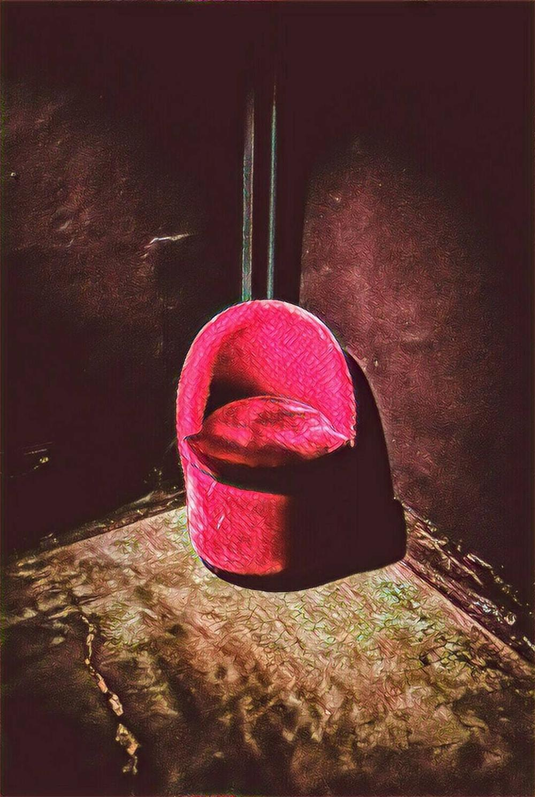

恍神
2017-11-04

大家好，我是老闆「那個誰」，人生苦短，不如聽個「故事」解解悶？
醫院
古說人有三魂七魄，一魂一魄都來自不同的地方，在人逝去後也各分東西，所以「自己」不只是「一個」，「你」至少是個十人的菁英小組，在每個思想與說話的當下，裡面有著許多參差的雜音，述說著天南地北的渴望、痛苦與目標。
所以「失魂落魄」的真正內涵是指――「其中一個自己離職了」。
人們都在不同事件的發生之際，資遣了某個自己。有人比較慘，十來歲就開除了十分之一的理想；有人更慘，三十幾歲就遺失了十分之五的快樂。
就像一場交易，以為拿十分之幾的自己作為籌碼，真能換得一些甚麼，或許有，但老闆跟你保證，十個禿子九個富，他們被換走的不只是有頭髮的自己，還有一段本來應該要細細品嘗的人生。
這些「被」自願離職的「自己們」，唯有在某個工作、讀書、旅遊的片刻，累到、苦到、感嘆到不小心恍神的moment，才會發現原來他們都在轉角處偷偷地等待復職，從未離去。
有時他們一個不注意會走到我們店裡，向老闆我問起有沒有看見你？有空就來故事柑仔店跟他們敘敘舊吧。
--無論你是誰，給我你的故事，我告訴你不知道的自己--